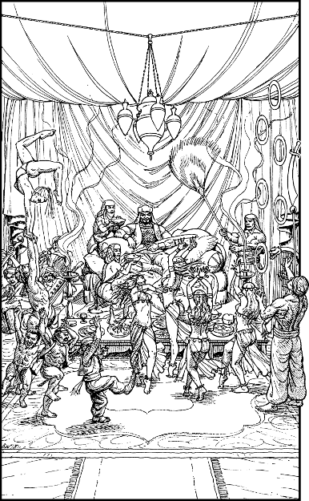

229
Night is drawing its veil across the sky when you enter the great tented city of Rakholi. This vast nomadic settlement nestles upon a rich flood plain which supplies excellent feed for the horses of this region. Horses are a way of life for the nomads, and Rakholi is where they come to conduct their business.
Your Lissanian escorts deliver you into the tented encampment of their leader, the illustrious Gavhan Bazan. The Khea-khan and his family remain aboard their carriages while you and Captain Chan make sure that a safe and friendly reception awaits them. Inside the main tent you discover a wondrous sight. The nomad chief sits atop a nest of cushions surrounded by jugglers, acrobats, capering dwarves, and a host of exotic dancing girls. Pots of incense smoke before him, and there are platters of food and fine wine in abundance.
The bearded Bazan greets you with a flamboyant gesture of his arms, and he enquires hurriedly as to the nature of your cargo. He is eager to trade. Chan’s reply is evasive, and you sense that he does not entirely trust the nomad chief. The captain looks to you and whispers under his breath: ‘Can you tell if this man is worthy of our trust, Grand Master?’

If you possess Astrology and have attained the rank of Sun Thane, turn to 159.
If you possess Kai-alchemy and wish to use it, turn to 245.
If you possess neither of these skills, or have yet to attain the required rank, or if you choose not to use either of them, turn instead to 257.